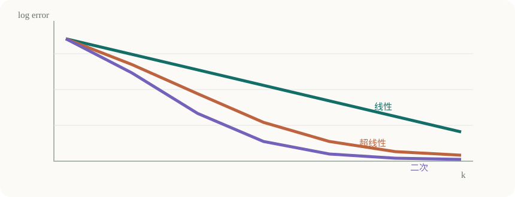

3.3 收敛速度：线性、超线性与二次
“算法收敛了”只回答最终是否接近解；“收敛得多快”则回答误差每轮缩小多少。不同的收敛阶，描述的是误差递减的不同规律。
为什么还要研究收敛速度
设算法生成迭代点 xk，目标解为 x*。如果 ‖xk−x*‖→0，我们知道迭代点在靠近解；但这并不说明误差下降得快。比如每轮误差减半，与每轮把误差平方，二者都收敛，后者在误差足够小时会快得多。
收敛速度通常是局部概念：我们先假设迭代已经进入解附近，再研究后续误差的递推关系。它不能替代全局化策略，也不自动说明算法从任意初始点都能进入这个邻域。

用误差序列定义收敛阶
记 ek=‖xk−x*‖，假设 ek>0 且 ek→0。常用的 Q-收敛定义是：
Q-线性表示相邻误差最终以一个小于 1 的固定比例缩小；超线性表示这个比例趋于 0；二次收敛要求误差下一轮被当前误差的平方控制，C 是与 k 无关的常数。二次收敛必然超线性，但超线性不必然二次。
三种速度如何区分
| 类型 | 典型递推 | 关键比值 | 直觉 |
|---|---|---|---|
| Q-线性 | ek+1≈0.5ek | ek+1/ek→q<1 | 每轮按近似固定比例缩小 |
| Q-超线性 | ek+1=ek1.5 | 比值→0 | 每轮缩小的比例越来越强 |
| Q-二次 | ek+1≈Cek² | ek+1/ek² 有界 | 误差位数在局部快速增加 |
还要区分 Q-线性与 R-线性。Q-线性直接约束相邻误差的比值；R-线性只要求误差能被某个几何序列 Cqk 从上方控制，允许误差本身有一定振荡。除非题目明确指定，讨论收敛阶时应写清采用哪一种定义。
全局收敛与局部速度并不冲突
全局收敛分析回答：在给定假设下，算法从指定初始点出发是否能把梯度推向零或进入解附近？局部收敛速度分析回答：一旦迭代足够接近解，误差递推有多快？一种算法可以拥有可靠的全局化步骤，却只有线性局部速度；也可以有很快的局部 Newton 速度，却需要阻尼或信赖域才能安全地从远处开始。
阅读定理时检查：“二次收敛”通常需要足够接近解、足够光滑和非奇异 Hessian 等条件。它不是对任意初始点、任意非凸函数和任意步长的保证。
交互：比较三种误差序列
从同一初始误差 e₀=0.5 出发，比较 eₖ₊₁=0.5eₖ、eₖ₊₁=eₖ^1.5 与 eₖ₊₁=eₖ²。改变迭代轮数，观察误差与相邻比值。
实时计算
Python：可复现的数值检查
这些递推是用来解释收敛阶定义的数学序列，不是某个具体优化器的实验数据。
"""Compare Q-linear, Q-superlinear and Q-quadratic error recurrences."""
def sequence(update, initial: float = 0.5, steps: int = 8):
values = [initial]
for _ in range(steps):
values.append(update(values[-1]))
return values
if __name__ == "__main__":
linear = sequence(lambda e: 0.5 * e)
superlinear = sequence(lambda e: e ** 1.5)
quadratic = sequence(lambda e: e ** 2)
print("k=4 errors:", linear[4], superlinear[4], quadratic[4])
print("superlinear ratio:", superlinear[5] / superlinear[4])
print("quadratic ratio:", quadratic[5] / (quadratic[4] ** 2))
assert linear[4] == 0.03125
assert superlinear[5] / superlinear[4] < superlinear[2] / superlinear[1]
assert abs(quadratic[5] / (quadratic[4] ** 2) - 1.0) < 1e-12思考：如果 e_k=1/k，为什么它收敛到零，却不是 Q-线性？如果 e_{k+1}=e_k^1.5，为什么它超线性但不满足二次收敛定义？